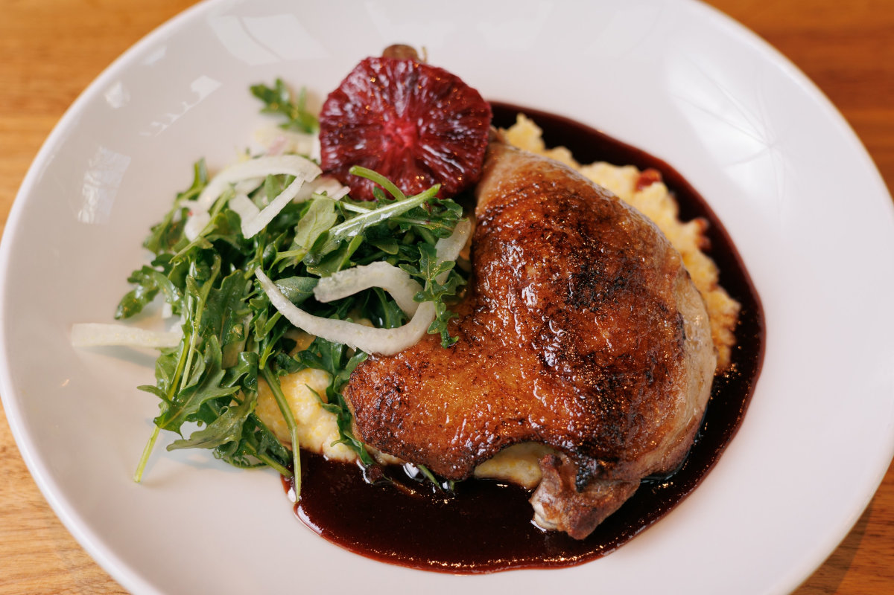
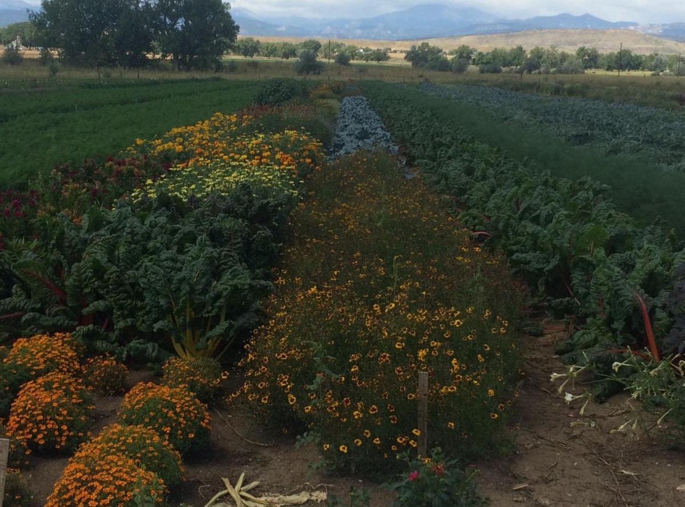

Boulder, Colorado
Seasonal cooking
on Pearl Street.
Food from Colorado farms, a menu that follows the seasons, and a table in the heart of downtown Boulder.
View Menus
1047 Pearl Street Boulder, Colorado
Hours & Directions
Our Kitchen
From Colorado farms.
What our local farmers grow shapes what we cook. Our kitchen works with Colorado producers for ingredients like grass-finished beef, Hazel Dell mushrooms, and organic eggs from Wisdom Farm in Haxtun.

Private Dining
The SALT Cellar.
Gather downstairs in our private dining room for dinners and celebrations of ten or more, right beneath Pearl Street.
Explore the Cellar